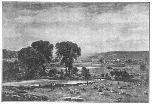
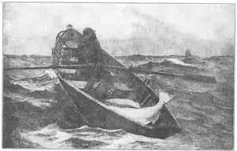

29
MORE AMERICANS
更多的美国画家

I KNOW you’ve heard of Robert Fulton, the inventor of the steamboat. But have you ever heard of Robert Fulton the painter? Does it seem strange they should have the same name? Then this ought to seem even stranger—they were born the same year. Stranger yet—they died the same year. But—
It’s really not strange at all, because the painter and the inventor were the same Robert Fulton. Robert Fulton’s first profession was portrait painting. He studied under Benjamin West in London.
I know you’ve heard of Samuel F. B. Morse. Surely. He invented the telegraph. But have you ever heard of Samuel F. B. Morse the painter? Does it seem strange they should have the same name? It’s really not strange at all, because the painter and the inventor were the same Samuel F. B. Morse. Morse’s first profession was portrait painting. He too studied under Benjamin West in London.
Both were inventors. Both were painters. Both were helped by West. And they weren’t bad painters, either. Of course they weren’t nearly such good portrait painters as Holbein or Hals or Dürer. But you’ll find them in almost any history of American art.
I wish I could tell you more about these and the many other early American portrait painters. About Rembrandt Peale, for instance, who first provided a city in the United States with gas lights for its streets (and also studied under Benjamin West). Or about his father, Charles Willson Peale, who had a famous museum of all kinds of queer tings. Or about—
But I’ll have to stop, for it’s time to tell you instead about the next group of American painters. These were landscape painters. First came these interesting old portrait painters, then came landscape painters.
Most of the early American landscape painters are not quite so well–known as the portrait painters. These landscape painters tried to put into their pictures all the little details that they saw in nature. Every stick and stone and bush was painted in very carefully, and their pictures as a whole weren’t so good as if the painters had left out the little things so you could look at all the picture at once. Instead your eye sees the picture piece by piece.
They generally painted scenes that were very impressive, like views of mountains and big rivers and valleys seen from hilltops. Finally, however, one landscape painter changed this. He painted everyday peaceful scenes, like a meadow or some trees. He left out the unimportant details so you could see a beautiful picture instead of just a copy of a piece of real country.
I don’t mean you to think that the real country isn’t beautiful. A real scene out of doors is beautiful—more beautiful, generally, than any picture of it could be. But, you see, a painter can never make his picture look exactly like the real, beautiful scenery itself and so it’s often better for him to make his painting a beautiful thing and not try to make it exactly like a real scene. A painter has to do this mostly by trying to make you feel what he felt when he saw the scene, rather than trying to show you every little thing he saw.
So this painter of everyday peaceful scenes, whose name was George Inness, tried to make people feel how beautiful he thought the scene was. George Inness used very beautiful colors that harmonized, or went well together. If there were some bits of color in the real scene that would not harmonize with the other colors in the picture, he left them out. If the picture looks better without having every detail clearly put in, why not paint it without the detail? This is what George Inness thought. And so his landscapes gradually became better and better pictures as he learned to leave out the things he saw that would prevent the picture from being beautiful.

No.29-1 PEACE AND PLENTY（《平静与富饶》） INNESS（英尼斯 作）
Courtesy of The University Prints
Do you still know what I’m talking about? I know it is pretty hard to understand. I hope yon will go to a museum some day and see one of Inness’s paintings. Then you will be able to enjoy the colors as well as the shapes of what he painted. In this illustration of a famous picture of his called “Peace and Plenty,” for instance, you can see the shapes, but I can only tell you of the warm, glowing, golden that streams across the original painting.
I can only tell you, too, that George Inness was one of the best American landscape painters. You will have to see some of his paintings themselves before you can really appreciate their true beauty.
A painter very different from George Inness was Winslow Homer. Winslow Homer is famous as a painter of the sea. Boys and girls can hardly help liking his pictures. Winslow Homer didn’t care to paint quiet seas. He preferred stormy ones. His pictures of waves dashing high against the rocky New England coast have been called the best sea paintings that any artist has done. Winslow Homer loved the sea. He built his house on the rocky coast of Maine, where he could always watch the ocean.
He loved to hunt and fish, too, and often went into the Adirondack mountains—they were really wild in those days—and there he painted hunting scenes and canoes shooting the rapids and the guides at work.
When Winslow Homer took a trip on the ocean south toward Bermuda or the West Indies, he painted sea scenes of stormy weather there. He was fond of painting the fishermen who went in their schooners to fish on the Grand Banks out at sea. The picture shows you one of these fishermen.

No.29-2 THE FOG WARNINC（《大雾警报》） HOMER（霍默 作）
Courtesy of The University Prints
The fisherman is in a boat called a dory that has been sent out from the schooner. You can see the fish the man has caught. But a fog is coming up and the fisherman has to row hard and fast to get back to his schooner so as not to be caught in the fog. If the fog catches him he can only hope to get safely back by listening for the fog horn on the ship and rowing blindly toward the sound. It is dangerous business, alone in an open boat on the Atlantic, with the fog rolling in. Let’s hope he reaches the schooner.
Now, instead of simply telling you that these two painters, George Inness and Winslow Homer, were fine painters, I’ll say it this way: The more you see of their paintings, the more, I’m sure, you’ll like them.
And I’ll add this: You don’t have to wait till you’re grown up to understand and like their pictures. Inness and Homer painted pictures that boys and girls surely must like. That’s what I think.
【中文阅读】
我知道你一定听说过罗伯特·富尔顿吧，他发明了蒸汽轮船。但是，你听说过画家罗伯特·富尔顿吗？这两人同名同姓，是不是有些奇怪呢？而更奇怪的是，他们两个人竟然在同一年出生。然而，更奇怪的呢——他们在同一年去世。
事实上，这一点都不奇怪，因为发明家罗伯特·富尔顿和画家罗伯特·富尔顿本来就是同一个人。罗伯特·富尔顿刚开始的职业就是肖像画画家，他在伦敦本杰明·韦斯特门下学画。
我知道你一定听说过塞缪尔·摩尔斯，他发明了电报。不过，你听说过画家塞缪尔·摩尔斯吗？这两个人的名字是一样的，这是不是有些奇怪呢？其实你一点都用不着觉得奇怪，因为两个塞缪尔·摩尔斯本来就是同一个人。摩尔斯一开始也是肖像画画家，同样在本杰明·韦斯特门下学画。
罗伯特·富尔顿和塞缪尔·摩尔斯既是发明家又是画家，而且两个人都受过韦斯特的帮助。当然，他们比不上霍尔拜因、哈尔斯或丢勒这样优秀的肖像画家，但他们也算不上很差的画家。几乎在任何一部美国绘画史上，都能看到他俩的名字。
我希望能介绍更多他们的事迹以及其他许多美国早期肖像画家的故事，比如伦勃朗特·皮尔，他给美国城市安装了第一盏路灯（他也曾跟本杰明·韦斯特学画），或者介绍他的父亲查尔斯·威尔逊·皮尔，他拥有一个很有名的博物馆，馆里收藏了各种奇特的东西。或者介绍——
但我还是要停下来，因为接下来我要介绍另外一批美国画家，他们都是风景画家。美国最先出现的是一批有趣的老肖像画家，然后才有风景画家。
美国大部分早期风景画家都没有肖像画家那样出名。他们试着用绘画记录他们在大自然中看到的点点滴滴，比如，一根枝条、一块石头，或一片灌木丛，都画得仔仔细细。然而从整体画面上看，他们的绘画并不很精彩。他们好像略去了一些无关紧要的东西，使你一眼就目睹整个画面。但你的眼睛反而在画面一点点地看。
他们画的场景通常都是非常的壮观，像高山、大河以及可从山顶上俯视的山谷。然而，后来有一位风景画家改变了这一现状。他画的是日常生活中宁静的场景，例如 一片草地或一些树木。他省略了一些无关紧要的细节，这样你看到的是一幅美景画面，而不仅仅是某个乡村的真实缩影。
当然，我并不想使人觉得真正的乡村风景不漂亮。户外的风景当然是美的——一般说来，这种美不是风景画能画出的。要知道，一个画家永远不可能让他的画看起来像真正的风景那样美，所以他不会完全临摹真实的风景，而是尽力使他的画看起来漂亮。要想做到这一点，他就要让人体会到他在看风景时的感受，而不是试图展示他看到的每个微不足道的细节。
这位画日常生活中宁静场景的画家就是乔治·英尼斯。他竭力促使人们去感受这些景色的美妙之处。乔治·英尼斯的绘画色彩非常华丽，但色彩之间十分地协调。如果他觉得在现实风景中的某些色彩和画中的其他色彩相冲突，他就会将它们统统略去。如果不含所有细节的画面看上去更好，那为什么不略去这些细节呢？这就是乔治·英尼斯的观点。他的风景画变得越来越棒，因为他学会了摒弃那些有损绘画美观性的东西。
你仍然知道我在说些什么吗？我想，要明白我在说什么是相当困难的。我希望有一天你能到博物馆去看看英尼斯的画，那么你就能领略到他画面色彩和形态之美了。比如，在他的名画《平静与富饶》中，你看到的是画中的形态，但我还能告诉你一点，温暖绚丽的金色光芒像流水一般漫布整幅画面。
我也只能说乔治·英尼斯是美国最优秀的风景画画家之一。你只有去看了他的画以后才能真正领会到他画的美妙之处。
另外一位画家叫温斯洛·霍默，他与乔治·英尼斯截然不同。他以海景画闻名于世。孩子们都会情不自禁地爱上他的画。温斯洛·霍默不喜欢画风平浪静的海面，而更喜欢画暴风骤雨时的海景。那高高的海浪冲击着多岩石的新英格兰海岸，这些画被称为有史以来最棒的海景画。温斯洛·霍默热爱大海，他在缅因州的岩石海岸边建造了一所房子，以便在那儿随时随地观看海景。
温斯洛·霍默也很喜欢狩猎和垂钓。他经常深入阿迪朗达克山脉——当时真的很原始。温斯洛在那里画狩猎的场景、激流勇进的独木舟和工作中的向导们。
当温斯洛·霍默向南边的百慕大群岛或西印度群岛航行时，他把暴风雨来临时的海景画了下来。他喜欢画渔夫，这些渔夫乘着纵帆船出海到大浅滩捕鱼。下图画的就是一位渔夫。
渔夫乘坐的平底小渔船是从纵帆船放出来的。你可以看到渔夫捕的鱼。但是，这时候海面雾起，渔夫必须使劲地划船，这样他才能在被大雾笼罩之前回到纵帆船上。如果他真的被海面上的大雾所笼罩，那么他就只能寄希望于大船上的雾笛鸣响，然后毫无方向感地朝着笛声划去。烟雾四起，孤身一人划着敞式小船在大西洋上航行的确是一件很危险的事。我们只希望他能平安地到达纵帆船。
我不会简单地说乔治·英尼斯和温斯洛·霍默是两位优秀的画家，但我会这样说，我确信，他们的画你看得越多，就越喜欢。
最后，我要补充一点，你不必等到长大后才能理解和欣赏他们的画，因为是孩子就必定会喜欢英尼斯和霍默的画。这就是我的观点。